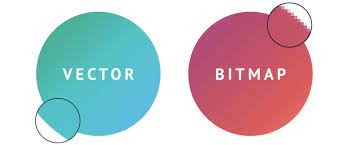

Digitale afbeeldingen bestaan uit allemaal pixels. Deze pixels hebben allemaal een specifieke kleur. Er zijn 2 verschillende soorten digitale afbeeldingen. Er zijn bitmapafbeeldingen en vectorafbeeldingen. Bitmapafbeeldingen zijn afbeeldingen waar de kleur van elke individuele pixel wordt opgeslagen. Ze kosten daardoor ook veel opslagruimte en als je inzoomt kun je de pixels ook zien. Een vectorafbeelding daarentegen slaat de vormen van de afbeelding op. Hierdoor blijft de afbeelding scherp als je inzoomt. Je zou denken dat een vectorafbeelding daardoor ook veel beter is, maar dat is niet per se zo. Bij digitale foto's is het namelijk niet mogelijk om de vormen op te slaan. Hierdoor kan een vectorafbeelding niet worden gebruikt.
Geluid wordt op een computer opgeslagen door een proces genaamd samplen. Met samplen wordt een proces bedoelt waarbij elke zoveel (milli)seconde wordt gemeten hoe sterk het geluid is. Dit wordt gedaan via een microfoon. De microfoon zet de trilling van de lucht om in een elektrisch signaal dat vervolgens wordt omgezet naar binaire getallen. Als je het geluid vervolgens afspeelt worden proces andersom gedaan en wordt er van de binaire getallen weer een geluid gemaakt.